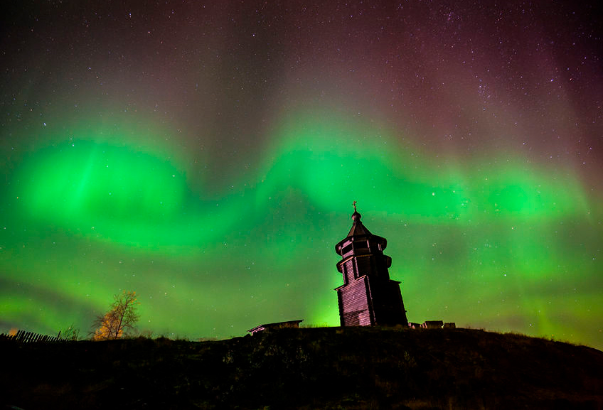
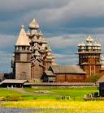
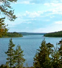
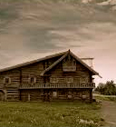

Истории в картинках

Природно-культурное наследие Архангельской области
Архангельская область поистине уникальна - она одна из чрезвычайно насыщенных памятниками истории, архитектуры и градостроительства, мемориального искусства.

13 сент 2017
Nunc elementum diam nec faucibus tincidunt. Duis quis mattis mauris. Integer vitae lacus sed augue convallis luctus.

21 авг
Nunc elementum diam nec faucibus tincidunt. Duis quis mattis mauris. Integer vitae lacus sed augue convallis luctus.
11 май 2017
Nunc elementum diam nec faucibus tincidunt. Duis quis mattis mauris. Integer vitae lacus sed augue convallis luctus.

8 апр 2017
Nunc elementum diam nec faucibus tincidunt. Duis quis mattis mauris. Integer vitae lacus sed augue convallis luctus.